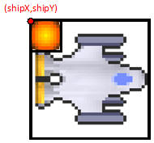
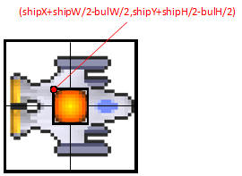

The Bullet Class

Now that a Ship has been placed on the screen it is time to get some weaponry. Our goal is to be able to press the spacebar and to have a bullet shoot out and last for a specific amount of time before fading out. Create a class named Bullet, which will be similar to the Asteroid or SpaceShip class.
Instance Fields
Like the others, A Bullet needs instance field for the
x,y,width,height, speed, direction, and Picture.
Constructor
When the Bullet is created you cannot do as much randomization as was done
previously. Make Bullet's constructor take in three double parameters; two
doubles for x and y, and one for the direction that it's heading.
Set the width and height to be 10, and the Picture name in the jar is "space/bullet.png".
Other Methods:
Add the following methods. They should function the same way that they do in the SpaceShip and Asteroid class.
Setting up the Canvas
The Bullets are going to be set up in a way very similar to how the Asteroids are set up in the Canvas. In the instance fields, add an ArrayList<Bullet>, which is then initialized to a new ArrayList<Bullet> in the constructor.
- In the paintCanvas method, loop through and tell every Bullet to paintSelf
- In the onTimerTick method, loop through and tell every Bullet to update.
- Adding Bullets to the canvas: The ArrayList<Bullet> will not start with any Bullets in it. So far we've got the paintCanvas and onTimerTick method looping through lists of empty bullets. Bullets should be added when the spacebar is pressed. Go to the onKeyPress method, and if the keyCode is 32 construct a new Bullet and add it to the list. The three parameters should come directly from the ship (myShip.getX(), etc.). You may have to add a getDirection method so it's accessible.
Compile and run the program. Hit the spacebar a few times and hopefully some Bullets will go flying around.

Fixing the Off-Center Bullet Problem:
If you simply set the Bullet's x, y, and direction to match the ship's you'll notice that they don't appear at the center of the ship.


Adding half the width to the x and half the height to the y will almost solve the problem, but still be off-center.


In order to match the center of the Bullet to the center of the ship, we must subtract half the Bullet's width and height.


Giving the Bullets a lifespan
You may have noticed a little problem. Your Bullets are immortal and the screen is soon filled with them. It's time to add a way for the Bullets to die of old age, which will clean this up a bit.
Add two instance fields to Bullet: an int for counting and an int to represent the maximum count before the Bullet should disappear (30 is a good start).
Change the update method to increase the counter by one as well as change the x and y.
Add a method named isTooOld, which returns true if the count has passed the maximum.
Limiting the number of Bullets
You've probably noticed that holding the spacebar down is a little bit of a cheat mode. In order to make it more fair, go to the section where the Bullets are added to the ArrayList and make sure that they only get added if the size of the ArrayList is less than the maximum number of Bullets. This means that other Bullets will have to 'die' before you can add more.
In the Canvas class:
The ArrayList<Bullet> represents every bullet that will appear on the screen. Since we want the bullets to disappear after they get too old, the timer should be looking for bullets that are too old and removing them from the ArrayList.
In the onTimerTick method you will need a separate loop that will loop through the ArrayList<Bullet>, check if it's too old by calling the isTooOld method, and removing it if that method returns a true value.
WARNING: YOU CAN NOT USE THE NEW FOR-LOOP
One of the rules of the enhanced for-loop is that you cannot add or remove from
an ArrayList while looping. You will have to loop through the old
fashioned way. this means that you will set up an int to represent the
index, and use the get method to get the Bullet out of the ArrayList before
calling the isTooOld method. Don't forget that ArrayLists have a
remove method.
Run the program again. Hopefully this time the Bullets will only last for a while.